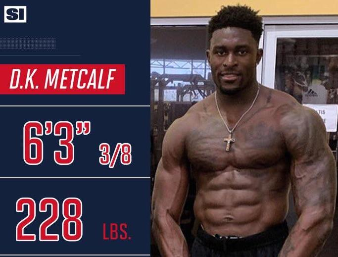
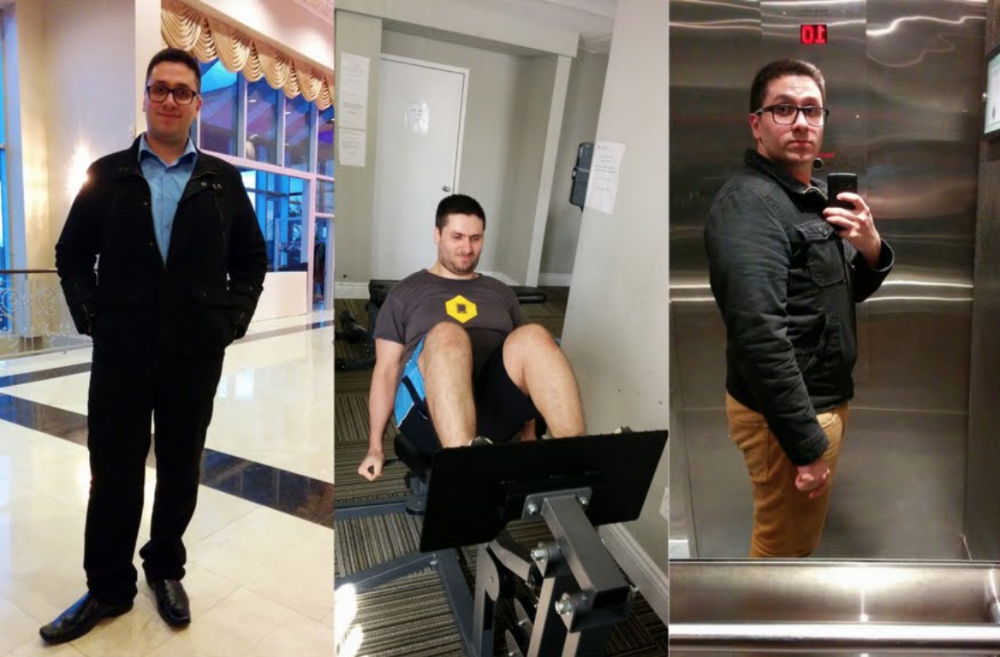
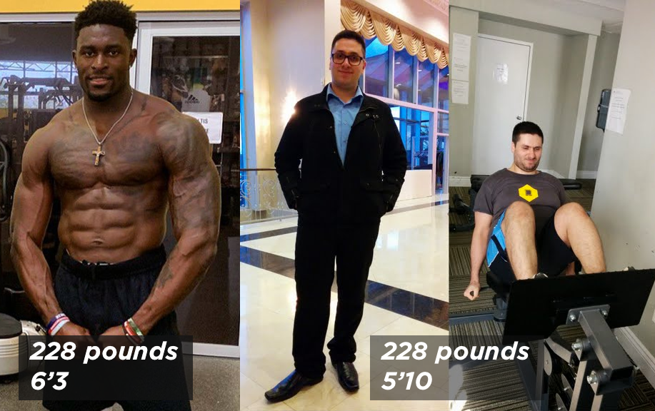
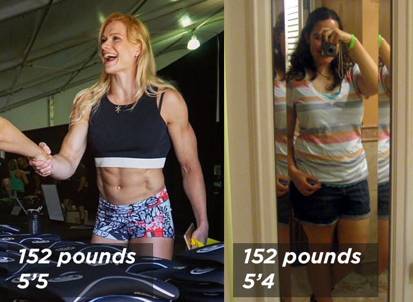
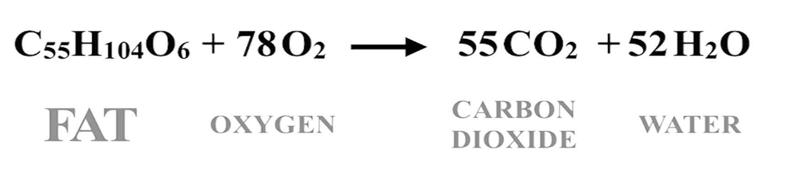

⚠️This live essay is in Beta. It mostly works and is awesome, but you might find a button or two that is not active. Sign up to the email list at the bottom for updates and to get notified when it is finished and released. ✌🏼⚠
What do we want? Abs. When do we want them? Now. This app will give you the map of how to get there. If you follow it, you will get abs.
Note⚡️ - This is a live essay, or an essay + calculators. As you enter information it will customize the information presented for you. If you already understand the principles, click here to use the calculator only. If this is your first time, Welcome! and ready player one.
How to get abs
To have visible abs, you need two things. You need:
Abdominal muscles
A low enough level of body fat so your abdominal muscles are not completely covered by your abdominal fat.
That is it. You do not need to do specific exercises or a thousand crunches or sit ups a day. Abs connect your ribs to your hips and pelvis along your front and sides. When you contract your abs, they pull your ribs and hips closer, bending your spine to the front or sides. If you can sit up or lean forward, you have abs. ✅ Check off the first item!
Side note for Science! : It is true that if you have low enough levels of body fat, but underdeveloped core muscles that you will have abs, but they might not look that impressive. Doing the right core exersizes can help you have better abs. Join the email list at the bottom of this essay, and I will send you a list of the best core exersizes. Hint, one of them is not the crunch.
However our abs are covered by a few layers of tissue. Simplified, our abs are covered by a layer of facia or connective tissue, a layer of fat tissue, and then a layer of skin. The skin and facia are thin but the layer of fat tissue can be thick or thin. To see our abs, we need that layer of fat to be thin.
So you have abs right now, you just need a low enough level of body fat to see them. So what level of body fat is needed to see abs? Let's talk about what is fat, and how body fat works.
But first, let's customize this essay to be for you. It is a live essay after all. What is your name?
Hey there. Thanks for reading! Hey there. Thanks for reading! Ok back to the learning, how does fat work.
Fat is good. Too much fat is bad
First, let us make this clear. We shouldn't just get rid of all our fat to uncover our abs beneath. We need fat!. We need fat. Fat is good. Over half of our brain is fat. Fatty acids contribute to our nerve development and function. We need fat to develop hormones, which serve as the body’s chemical signals and controls between different types of tissues. Fat provides cushioning for our internal organs, like shock absorbers.
It is too much fat that is the bad. Like many things in life, moderation in all things. Too little fat and you will die. Way too much fat and you will also die. Just right? You, Player One, you will have awesome abs.
So what is fat and why is it useful?
Ok you say. Fat is good. But how much do I need? Fat is a bunch of different types of molecules, made up of the elements carbon, hydrogen, and oxygen. These molecules are collectively called fatty acids. The most common type of fatty acid in organisms is triacylglycerol. Think of triacylglycerol as little droplets of butter or guacamole sprinkled around your body. Triglycerides are made up of three (tri) fatty acid chains and a spine of glycerol holding those three together.
Your body can break down triacylglycerol into energy. When broken up, the glycerol goes to the liver to be made into glucose which your body can use for energy, while the three fatty acid chains go to other cells, where the mitocondria break them down for energy by a process called beta oxidation. Mitocondria are the power house of the cell! I knew that would be important some day.
Your body gets a lot of energy when it breaks down fat. More than carbohydrates or protein. And fat has great energy density which means it can store a lot of energy in a little space. When your body needs energy it breaks down some of the stored energy in your fat.
Fat is the most energy dense nutrient, and so is the most efficient form of energy storage your body has.
How does our body store fat?
When you body has an excess of energy, like right after you eat, your body stores that energy as triacylglycerides in your fat cells. Fat cells are also called adipocytes. A bunch of fat cells along with the connective fibers which supports them is fat tissue, also know as adipose.
What is a fat cell? You can think of a fat cell as a tiny little bag that holds a drop of fat. White fat cells are large cells that are 15 percent cell structure (a small nucleus, cytoplsm, hormone creators etc) and 85% one large fat droplet. Fatty acids are stored in that droplet in a semi-liquid form. I was initially confused what semi liquid means. So I found some examples of semi-liquids in real life. Guacamole, mayonnaise, toothpaste, hand sanitizer, or peanut butter. When you are storing lots of fatty acids, the cells are really big and full, and when you are not, they are small and deflated.
An empty fat cell is small, while a full fat cell can be 4 times the size of an empty fat cell.
So when your body needs energy, it 'burns fat' by taking some triacylglycerides out of a fat cell. It is called 'burning' fat because it can break down the fat via oxidization. Your body breaks those fatty acids down into one glycerol which becomes glucose in your liver, and three fatty acids which become energy in your mitocondria (powerhouse!). Your body combines the fat with oxygen and you get energy, CO2 which you breath out, and water.
So what happens to my fat cells when I burn up their fat storage?
Just like your body doesn't get rid of your stomach when it is empty, your body doesn't get rid of your fat cells when they are empty. They just get really small.
Imagine a fat cell as a little bag that can hold a droplet of fatty acids. Fat is stored as in a semi-liquid form. The term semi-liquid was interesting to me. Like what is that? A list of common semi-liquids are guacamole, mayonnaise, toothpaste, and hand sanitizer. When you are storing lots of fatty acids, the cells are really big and full, and when you are not, they are small and deflated.
Fat cells are located all around our body but the primary location is under our skin around our midsections.
Let's bring this back to abs. We need to reduce the amount of fatty acids we have stored in our fat cells, so those fat cells shrink and don't obscure our wonderful already present abdominal muscles.
Can I reduce the amount of fat in my fat cells just around my waist?
No. Spot reduction as understood by nearly everyone is a myth. Crunches don't get you abs. Your body is a complete system. If it needs more energy, it is going to get that from anywhere in the system it wants. Good evidence that spot reduction is not effective is tennis players. They always have one arm that is significantly more musclar, but that arm in studies is not leaner. So if you can't tell your body exactly where you want to lose fat with exersize we just have to decrease the overall amount of fatty acids we are storing in our fat cells.
Side note for the sake of SCIENCE! There is some evidence in studies that as you decrease your body fat in general, working out a specific area of your body could lead to a TINY bit more fat being lost from that area. But we are talking tiny amounts.
So how much fat do I need to be healthy & happy and still see my abs?
We can't just burn fat from our abs, we have to reduce our overall fat stores. So how much do we need to reduce our fat stores to see our abs? This is a bit tricky since every person is different.
We can measure the mass of the fat we store in pounds. But we can't just say 'you need to have 10 lbs of fat to see your abs' since every person is different. A really tall person has more mass, which is made up of both fat and lean body mass.
Because the amount of stored fat is relative to each person, it is best to represent this amount of fat as a percentage. Body fat divided by something standard, which is directly related to the person. Body fat percentage is the best way to represent how much fat will allow your abs to be seen.
Body Fat Percentage
Body fat percentage is calculated by taking your total fat mass, divided by your total body mass. This compares your fat mass to your lean mass. Bigger people have more fat mass, and more lean mass. So the percentage is relatively the same as a smaller person who has less fat mass and lean mass. Body fat percentage is a great way to measure fitness level, since it is the only body measurement which directly calculates a person's relative body composition without regard to height or weight. A tall person at 15% body fat, is going to be the same composition, and relatively the same fitness level as a short person at 15% body fat.
How to calculate body fat percentage?
The calculation for body fat % is:
( total mass of fat / by total body mass ) * by 100
Total fat mass includes both essential fat and storage fat. Essential fat is what you need to be healthy and happy. Remember, brain, hormones, internal shock absorbers. Storage fat is all that extra energy we cart around our waist.
Lean mass is defined as everything that is not fat. Muscle + bones + organs + water + everything else = Lean body mass.
Let's calculate an example.
Reminder⚡️ - This is a live essay. As you enter information it will customize the information presented for you. This first thing we need to know to really start customizing this essay for you: what is your gender?
What is your gender?
Let's take a 150 pound female. If she has 30 pounds of fat, and 120 pounds of lean body mass, she would have 30 / 150 = 20% body fat. She would be ripped with great abs.
Take the same 200 pound woman. If she had 60 pounds of fat, and 90 pounds of lean body mass, she would have 60 / 150 = 40% body fat. She would be obese.
Let's take a 200 pound man. If he has 20 pounds of fat, and 180 pounds of lean body mass he would have 20 / 200 = 10% body fat. He would be large and ripped with great abs.
Take the same 200 pound man. If he had 80 pounds of fat, and 120 pounds of lean body mass, he would have 80 / 200 = 40% body fat. He would be obese.
At what body fat percentage can I see my abs?
Now, you might be saying to yourself, get to the point man! How can I see my abs? What body fat percentage do I need? That answer is different for females and males.
For guys, abs start showing under 14% body fat, and for gals, under 22% body fat. These are estimates and every body is different but you need to have low levels of body fat compared to your levels of muscle to see your abs. Abs are clearly visible and well defined at 10% body fat for guys, and 20% body fat for gals.
Want great looking abs? Since you are ?, you should shoot for ?% body fat.
Let's recap what you need for abs.
✅ Abdominal muscles
?% body fat so your abdominal fat is not completely covering your abdominal muscles.
We now have our destination. ?% body fat. We know where we need to go, so let's create your map of how to get there. Maps are only useful if you know a.) where you are going, and b.) where you are right now. We need to calculate your starting point. We need to measure your body fat percentage. That way we can figure out how much fat you need to use up to get to ?% body fat.
How to measure body fat percentage?
There are many ways to measure this. The most accurate is to remove all your body fat and weight it. This would kill you. Don't do this.
The easiest way is actually just to eyeball it, using comparison charts and progress pictures. It is accurate enough to point us in the right direction.
What is your starting point?
Let first talk about weight. Your weight, considered by itself, doesn't really matter. A pound is unit of mass. (If you don't use the pound I apoligize. I will add an non US toggle to switch this essay to the better measurement system soon. Right now we are stuck in pounds.)
Side note: A pound can also be a unit of weight. A pound-force is a unit of weight, used to measure your weigh on Earth with gravity providing the force. A pound-mass is a unit of mass, as defined by the kilogram. So you still have mass in space, even if you have no weight. Back to the map!
If you weight more or less pounds, aka you have more mass or less mass, is that good or bad? We can't tell in isolation. Weight alone doesn't tell us anything. Let's look at an example.
Two men each have exactly the same weight. They both weight 228 pounds. Is that good or bad? I repeat, we don't know. They both have 228 units of mass.
What actually matters, in terms of abs and how you look is body composition. What percentage of your body is fat, and what percentage of your body is lean mass. Lean mass is defined as everything that is not fat. Muscle + bones + organs + water = Lean body mass.
This is D.K. Metcalf.

He weighs 228 pounds. Is that good or bad? We don't know unless we have another piece of information. What is his body fat percentage. How much of that 228 lbs is muscle?
As you can see from the image, well, most of him is muscle. He is like... all muscle.
You know who also weighed 228 pounds? Reddit user alihuda2002 who posted his story of himself getting in shape. (Very inspiring story) These are his starting photos from when he weighed 228 pounds

So if you weigh 228 pounds, is that good or bad? It totally depends on what your body composition is. How much muscle do you have? How much fat do you have? You could be a hardworking, genetic freak of nature who weighs 228 pounds and looks like a greek god / D.K. Or you could be an average office work would weighs 228 pounds like Ali.
The difference between the two men comes down to body composition or body fat percentage.

Let's look at a female example. What if I told you two women weighed the same at 152 pounds. Is that good or bad? Like we learned above, weigh alone tells us nothing. What matters is body composition.
In this case, you could be a hardworking genetic freak of nature and look like world CrossFit champion Annie Thorisdottir. Or you could be average like Erin.

When people say they want to 'lose weight' they really want to lose fat. You can lose weight by removing a limb or getting dehydrated. Not a great idea. You can lose fat by eating correctly and exersizing.
What is your current weight?
What is your current body fat percentage?
I don't know my body fat percentage. Help me estimate it.
How to estimate body fat percentage
There are many ways to estimate body fat, but one of the easiest and most straightforward ways is to just eyeball it with a comparison chart and descriptions.
I scoured the internet for the best body fat comparison charts. Fair warning lots of pictures of people with various levels of body fat ahead. You don't have to be exactly accurate. Be honest. Guys usually think they are leaner than they really are, girls the opposite.
You currently weigh A pounds, with your body fat percentage of Y%. That means you have B of body fat and pounds of lean body mass.
What is your goal?
What is your goal body fat %? This is a better question that what is your goal weight. Remember for males your abs pop at 10% body fat %.
How to get to gender % body fat
You are at Y%, with a current weight of X with Z pounds of lean body mass and A pounds of body fat.
Your goal is gender% bf, with a goal weight of with pounds of lean body mass and C pounds of fat.
To get to gender% bf, you need to burn off B pounds of fat. (Current A - Goal C = B to lose)
The next two questions are "How can I decrease my body fat?" and "How long will this take?" We can answer both these questions with the formula to reduce body fat.
How to decrease body fat
You need to do 4 things to decrease your body fat, and therefore your body fat percentage.
An important note‼️ - You want to decrease your body fat, and keep your lean body mass. You don't want to 'lose weight'. You want to lose body fat. You can lose weight by not drinking water, or removing an extra body part, but that won't have the effect you want. You want to keep all your lean body mass, and lose an amount of body fat.
To do that, you need to:
Be in an energy deficit.
Lift weights to keep and gain muscle.
Eat enough protein to repair and build your muscles.
Sleep enough to repair and build your muscles and keep you stress hormones down..
Let's tackle the first one.
How to be in an energy deficit
This one is a simple concept, but difficult to do. You need to balance how much energy you consume, with home much energy you use.
The energy you use needs to be consistently greater than the energy you consume.
Energy Expenditure > Energy Intake
Let's first calculate how much energy you use on average.
How to calculate your energy expenditure
Your body uses or burns energy all the time to keep you alive and happy. If you did absolutely nothing in a day, your body would still burn a lot of energy keeping you healthy, pumping your blood and repairing your cells.
This is called your base metabolic rate, or BMR.
Let's Calculate your BMR
We can use a formula to calculate what your BMR is.
What is your age?
What is your height in feet?
and your remaining height in inches
We will use the weight that you entered earlier, of weight fill pounds.
Your estimated BMR is bmrAnswer
If you did nothing in a day, you body would burn bmrAnswer calories keeping you alive.
However, we don't just sit in bed all day. (Although sometimes we wish we could).
We move and cook, and talk, and fidget. We also exersize. All the non-intentional exersize energy used is categorized as Non-Exercise Activity Thermogenesis or NEAT.
Intentional exersize like walking, lifting weights or playing soccer is categorized as Exercise Activity Thermogenesis or EAT. (Which is weird because it is like the opposite of eating, but whatever white labcoat scientists we are still listening.)
There is also some energy used as Thermic Effect of Food or TEF, but we are going to ignore that for right now. Click here to read an article that covers that in more depth.
BMR is easy to calculate but NEAT and EAT and TEF are hard to calculate. So scientists have developed a series of activity multiplers. You take your nicely calculated BMR, and multiple it by an activity multiplier that wraps NEAT, EAT, and TEF up in one pretty bow 🎀.
This gives us an estimatation of the additional calories that we burn in our normal everyday activity.
Let's pick your Activity Multiplier
Need help picking your activity level? 👇🏻
Click to show the Estimating Activity Level Section
How to estimate your Activity Level
Studies have shown that we all overestimate how much we are active. So read the descriptions, pick where you think you are, then move down one level. For example if you think you are Moderately Active, chose Lightly Active. Since it is an estimate it just needs to be close and then you can see what the results are and tweak it.
Sedentary 1.15
You don’t intentionally exercise at all. Get up, go to work, come home, eat dinner, relax.
Lightly Active 1.2
On average, you walk for exercise about 30 minutes a day. Or you are running or lifting weights fro 15 minutes a day.
Moderately Active 1.4
If I was looking for you on a weeknight, I would call the gym. 50 minutes of vigorous exercise a day. Or about one hour and 45 minutes of walking (for exercise, not going around your house) per day. Most people do not do this.
Very Active 1.6
You move vigorously for your work (think something like construction or yardwork), or you workout every single day for more than an hour. If you were to get this level of activity only walking, it would be a nearly impossible four hours and 15 minutes of walking (again, for intentional exercise) a day.
Extra Active 1.8
Hey there Michael Phelps. Almost no one does this. This means every single day you are working out hard for an hour and a half. Or you are a professional speed walker.
Your BMR x Your Activity Multiplier gives your Total Daily Energy Expenditure or TDEE.
bmrAnswer x Activity Multiple =
Now that we have estimated your energy expenditure, we have look at the other side of the equation, your energy intake.
How to estimate your energy intake
Most people don't like this, but the best way to know your energy intake is to track how many calories you are eating. That is it.
How being in a caloric defict burns body fat
If you are consistently intaking less energy than you expend, your body will happily start using your stores of energy, aka your fat to fuel your daily function. Do this consistently and your body will use up the pounds of fat you want to get rid of. It does this by breaking the bonds that hold the fat molecules together and uses that energy.
Carbon, Oxygen, and Hydrogen make up a large part of our bodies.
Chemical formula for water is H2O. Chemical formula for carbon dioxide is CO2. The average chemical formula for human fat is C55H104O6.
Fat + Oxygen = Carbon Dioxide + Water

10 pounds of fat becomes -> 8.4 pounds of CO2 gas, and 1.6 pounds of water.
Pure fat has 9 calories per gram. Meaning if you burn 1 gram of pure fat, it will put off 9 calories of energy, along with .84 grams of CO2 and .16 grams of H2O.
There are 453.59 grams per pound. So 452.5 * 9 = 4,072.5. The max number of calories a pound of fat can contain is 4073 calories.
However body fat is not pure fat. You have lots of other stuff in there like cell walls, protein, fluid, cell nucli and other tissues. So the calorie content of body fat is going to be less than that of pure fat.
In 1958, a scientist named Max Wishnofsky concluded that the caloric equivalent of one pound of body weight lost or gained was 3,500 calories. In general, we can assume that:
One pound equals 454 grams.
Pure fat contains 8.7–9.5 calories per gram.
Body fat tissue is 87% fat.
Using those values, we can conclude that a pound of body fat contains anywhere from 3,436 to 3,752 calories.
Since calories are estimates themselves, we can use 3,500 calories per pound of fat as the baseline.
We now have all the information we need to figure out how long it will take you to get to bf goal% body fat!
We know how many pounds of fat you currently have.
We know how many pounds of fat will put you at bf goal% body fat.
We know how many pounds of fat you have to burn off as energy and CO2 and H2O.
We know how many calories are in a pound of fat. 3,500
This means we know know how many calories you need to burn off.
With that information now we just need to figure out how much you want to eat each day, and what your caloric deficit will be.
Since these 3 are linked, we can pick the amount of energy you want to eat and it will calculate the deficit and the date you will reach your goal by. Or you can pick a date you want to achieve this goal by and it will calculate the deficit needed, or you can pick the deficit and it will tell you the daily energy intake and the ateyou will achieve that goal by.
A very important question, do you know how much energy you are eating each day?
Daily Calories you eat / want to eat:
Your TDEE of X minus your deficit of Y gives you Z calories a day.
Daily caloric deficit:
Your caloric deficit is not calculated%. General advice is to pick a 25% deficit.
Date you will hit your goal by:
It will take you X days to reach your goal.
It will take you X weeks to reach your goal.
It will take you X months to reach your goal.
It will be daysinsert in X days.
There are X days until summer June 20, 2020 🏝.
Max Fat Loss
There is a upper limit to how fast you can lost body fat. Your body doesn't take all the fat from one cell or one pound of fat, it takes a little bit of energy from everywhere. Studies show that the max amount of energy you can use is 31 calories from each pound of fat.
This means that you can multiple your pounds of fat x 31, to get the max caloric deficit your body can sustain and not start using lean mass as energy as well.
For you this max caloric deficit is X calories per day.
Warning, this is your MAX. This is not normal. This is probably not healthy. But it is the most aggressive caloric deficit you can sustain while not having your body metabolize your own muscles for energy. Remember also that as you fat mass decreases, this max caloric deficit decreases, which is one of the reasons why losing fat when you have less fat mass can be tricky.
This also leaves you little room to get enough protein.
At X pounds total body weight, you need grams of protein a day. Since protein has 4 calories per gram, that is calsfromProtein calories from just protein.
With your TDEE of tdee - max caloric deficit of X that leaves you daily at Max calories a day. If calsfromProtein of those come from protein that means you have just Y calories left to consume in a day.
Remember max isn't always better.
But remember, there are 4 parts to reducing your body fat!
Be in an energy deficit.
Lift weights.
Eat enough protein to repair and build your muscles.
Sleep enough to repair and build your muscles and keep you stress hormones down..
Simply put, to lose just fat and not fat and muscle you need to workout, lifting weights, to remind your body you need the muscles. You need to eat enough protein to give the body fuel for building and maintaining muscles. And you need to sleep to allow your body to recover and keep your muscles.
If you only work on the energy deficit, you will lose muscle mass as well as body fat. This is not good as you will lose the very abs you are trying to get to show.
How to lift weights
Here are links to 2 basic weight lifting programs.
How to eat enough protein
Research shows that you need .82 grams of protein per pound of total body mass.
At X pounds total body weight, you need grams of protein a day.
How to get enough sleep
Sleep is critical to losing weight and gaining muscle, and having an enjoyable and productive life. If you are not getting enough sleep, you need to get more of it.